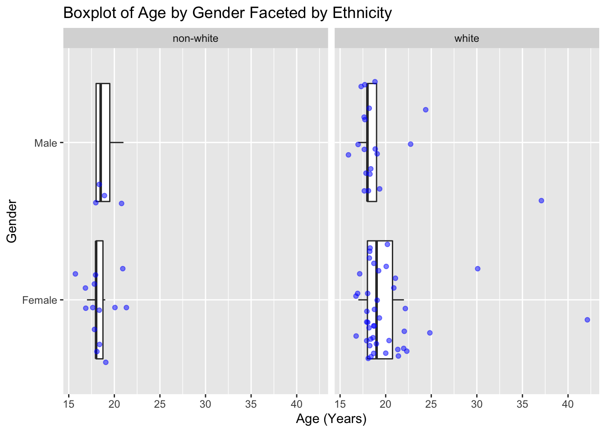

library(here)
library(tidyverse)Lab 3
hiphops <- read_csv(here("supporting_artifacts", "learning_targets",
"Lab 3", "hiphop.csv"))Question 1
Summary: This data set has the findings from a study done at the University of Minnesota. The study was done with the goal of predicting musical taste based on the familiarity with African American English. African American English is a dialect of English spoken predominantly by African-american individuals. Participants in the study responded on a scale of 1 to 5 in terms of familiarity with the vocabulary. The data also contains information about the subject’s sex, age, ethnicity, geographic populations of their hometown/county, their preferences for different types of music, and the ethnicity of the people they spend time with. 168 participants were selected from linguistics, sociology, and music classes from University of Minnesota .
Question 2
dim(hiphops)[1] 10752 38Each row corresponds to individual people’s responses to freely define AAE vocabulary. 168 participants multiplied by 64 terms gives us 10,752 rows in the data set.
Question 3
Missing values in the “move” variables and “weekly” were replaced with mean values within each of those variables. Missing values were also replaced with NA and 0.
A benefit of this method is that we could still perform calculations without the need to account for and drop too many observations for missing values. This would also be better than replacing numerical values with 0 which would skew results. A drawback is that the mean for missing values may not help us accurately capture the true results. 0 in some variables would cause incorrect conclusions being drawn from the data.
Question 4: Clean the dataset
cleaned <- hiphops |>
mutate(across(where(is.character), as.factor) ) |>
drop_na(numPreferredArtists, numOverallArtists)Question 5: Number of Unique Words
numdist <- distinct(cleaned, word, .keep_all = TRUE)
count(numdist)# A tibble: 1 × 1
n
<int>
1 64After cleaning, there are 64 distinct AAE words in this data set.
Question 6: Creating a new variable that re-categorizes ethnic
ethnic_cleaned <- cleaned |>
mutate(ethnic = (if_else (ethnic == "white", "white", "non-white")))Question 7
demographic_cleaned <- ethnic_cleaned |>
distinct(subj, .keep_all = TRUE) |>
select(sex, age, ethnic)
summary(demographic_cleaned) sex age ethnic
Female:56 Min. :16.00 Length:80
Male :24 1st Qu.:18.00 Class :character
Median :18.00 Mode :character
Mean :19.55
3rd Qu.:20.00
Max. :42.00 count(demographic_cleaned, ethnic)# A tibble: 2 × 2
ethnic n
<chr> <int>
1 non-white 18
2 white 62There are 56 females and 24 males. 62 participants are white and 18 are considered non-white. The average age of people in the study is 19.55 with the youngest at 16 and oldest at 42. Half of the people are 18 years old and under.
Question 8
ggplot(data = demographic_cleaned, mapping = aes(y = sex , x = age )) +
geom_boxplot(outlier.shape = NA) +
geom_jitter(alpha = 0.5, color = "blue") +
labs(title = "Boxplot of Age by Gender Faceted by Ethnicity",
x = "Age (Years)",
y = "Gender") +
facet_wrap(~ethnic)
ggplot(data = demographic_cleaned, aes(x = age)) +
geom_histogram(color = "dark magenta", fill = "dark magenta",
binwidth = 1) +
labs(title = "Histogram of Subject's Ages", x = "Age", y = "Number of Subjects")Finding Most and Least Familiar Language
familiar <- ethnic_cleaned |>
filter(age < 20) |>
group_by(word) |>
summarise(mean_familiarity = mean(familiarity))
slice_min(familiar, mean_familiarity, n = 1)# A tibble: 1 × 2
word mean_familiarity
<fct> <dbl>
1 The Nation 1slice_max(familiar, mean_familiarity, n = 1)# A tibble: 1 × 2
word mean_familiarity
<fct> <dbl>
1 feel me 4.52For people younger than 20, the least familiar phrase was “the Nation”. The most familiar phrase was “feel me”.
familiar_women <- ethnic_cleaned |>
filter(ethnic == "non-white", sex == "Female") |>
group_by(word) |>
summarise(mean_familiarity = mean(familiarity))
slice_min(familiar_women, mean_familiarity, n = 1)# A tibble: 8 × 2
word mean_familiarity
<fct> <dbl>
1 break someone out 1
2 dollar cab 1
3 domino 1
4 dukey rope 1
5 humming 1
6 plex 1
7 rollie 1
8 The Nation 1slice_max(familiar_women, mean_familiarity, n = 1)# A tibble: 1 × 2
word mean_familiarity
<fct> <dbl>
1 what it do 4.57The most familiar phrase for non-white women is “what it do”, while the least familiar phrases are “break someone out”, “dollar cab”, “domino”, “dukey rope”, “humming”, “plex”, “rollie”, and “The Nation”.
familiar_men <- ethnic_cleaned |>
filter(ethnic == "white", sex == "Male", age > 30) |>
group_by(word) |>
summarize(mean_familiarity = mean(familiarity))
slice_min(familiar_men, mean_familiarity, n = 1)# A tibble: 59 × 2
word mean_familiarity
<fct> <dbl>
1 [to be] ghost 1
2 A-town 1
3 ashy 1
4 ay yo trip 1
5 ballin' 1
6 beezy 1
7 bones 1
8 boo 1
9 boughie 1
10 break someone out 1
# … with 49 more rowsslice_max(familiar_men, mean_familiarity, n = 1)# A tibble: 3 × 2
word mean_familiarity
<fct> <dbl>
1 5-0 5
2 hard 5
3 make it rain 5The least familiar phrases for white men over 30 are “[to be] ghost”, “A-town”, “ashy”, “ay yo trip”, “ballin’”, “beezy”, “bones”, “boo”, “boughie”, “break someone out”, and the most familiar words are “5-0”, “hard”, and “make it rain”.
Study Subjects
justin_bieber <- ethnic_cleaned |>
filter(ethnic == "white", sex == "Male",
city >= 10000 & city <= 60000,
age >= 17 & age <= 23) |>
slice_max(bieber,
n = 1)Person 17 is most likely to be Justin Bieber. Based on the criteria given, along with the highest value of the “bieber” variable which shows how well someone knows Justin Bieber’s music, I think it is Subject 17.